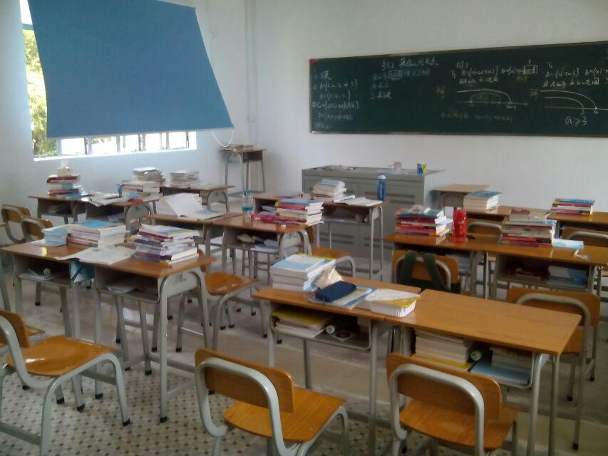
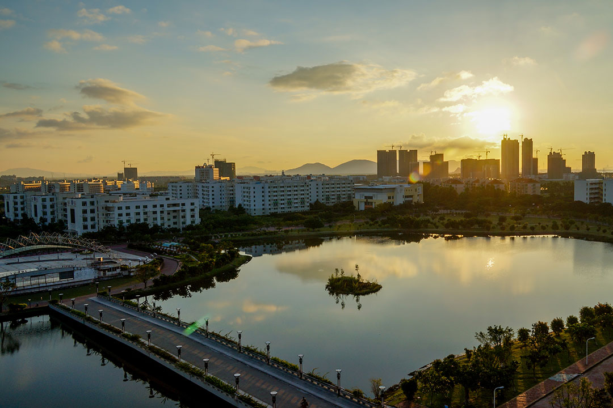
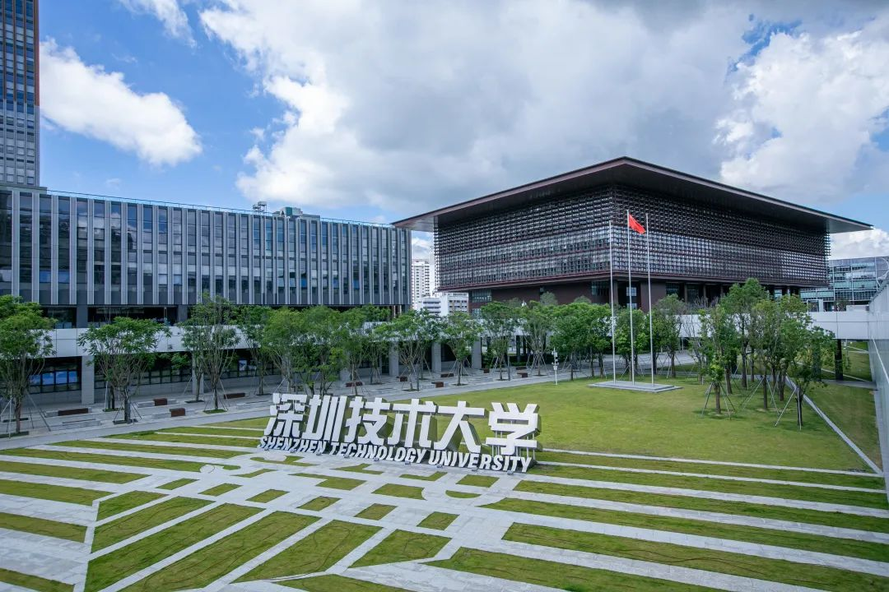
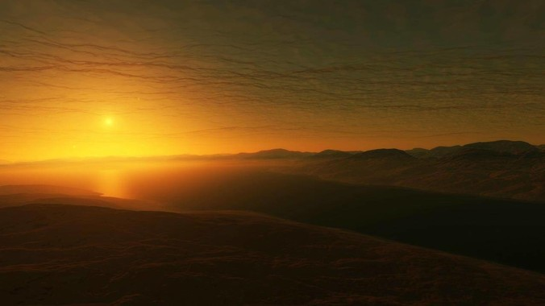

从2000到2023
在我人生的道路上，我曾经经历过许多不同的学校和阶段。每一个阶段都让我学会了不同的技能和面对不同的挑战。今天，我想与大家分享我在这个旅程中所经历的三个重要阶段。
从深圳第一职业技术学校到广东科学技术职业学院，这是我开始学习编程的地方。在这里，我认识了很多朋友，也开始了我的编程之旅。
在这个阶段，我学习了如何使用不同的编程语言和工具来开发各种应用程序。我还学习了如何与其他人合作，如何解决问题和如何快速学习新技能。这个阶段让我感到非常充实和开心。
深圳技术大学，这是我进入大学的第一站。在这里，我认识了许多优秀的新同学和老师。在这个阶段，我开始准备四级考试和考研。我发现我需要更加努力学习和提高自己的能力，以应对更高的学习压力和更高的学术要求。我花费了很多时间和精力来学习课程，阅读相关文献和进行研究。这个阶段让我深刻地理解到了学习的重要性和如何提高自己的学习效率。
回忆走过的路途，一切好的坏的都是路上的风景。在回顾这些经历时，我意识到每一个阶段都是我成长的机会。我学会了不同的技能和知识，也遇到了不同的人和经历。这些经历让我更加坚定了自己的目标和方向，也让我成为一个更加坚强和自信的人。我深信，这些经历将成为我人生中宝贵的财富，让我更加珍惜和感恩生命中的每一个时刻。
总的来说，我在这个旅程中学到了很多东西，也遇到了很多挑战。但是，我相信这些经历都是值得的。我学会了如何面对挑战和困难，如何在压力下保持冷静和理智，如何与他人合作和沟通。这些技能和经验都将成为我未来发展的基础和支持。
最后，我想说的是，人生就像一场旅程，每一个阶段都是一个新的起点。我们需要勇敢地面对挑战和困难，积极地学习和成长。只有这样，我们才能在人生的道路上走得更加坚定和自信。